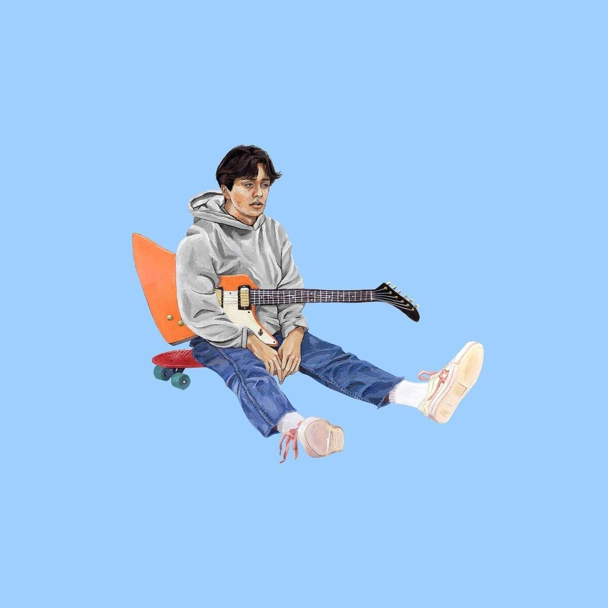

Boy Pablo (stylized as boy pablo) is the indie pop music project of Chilean–Norwegian singer songwriter Nicolas Muñoz. In the recording studio, Muñoz writes, records, performs, and produces all of the project's music. As a touring act, Boy Pablo consists of Nicolás Muñoz (guitar, vocals), Gabriel Muñoz (lead guitar), Henrik Åmdal (bass guitar), Eric Tryland (keyboard), and Sigmund Vestrheim (drums). Boy Pablo gained attention in late 2017 after the music video for the song "Everytime" gained international popularity on YouTube's algorithm. The duology concept EPs Roy Pablo (2017) and Soy Pablo (2018) were released under Boy Pablo's own independent label 777 MUSIC. Their debut studio album, Wachito Rico was released in October 2020. Out of nominations for six Norwegian Grammy Awards, Boy Pablo has won two, and has additionally been nominated for three GAFFA Awards and one P3 Gull award, having won the latter. Album Cover for Soy Pablo
Nicolás Pablo Rivera Muñoz (born 29 November 1998)grew up in Bergen after his Chilean parents immigrated to Norway in the 1980s. Born into a musical family as the youngest child, his father and brother were both multi-instrumentalists and helped teach him how to play guitar, drums, bass guitar and piano.He attended secondary school at Kongshaug Upper Secondary School of Music, a music boarding school in nearby Os. He and his parents moved to Os, Hordaland when he started secondary school, two years prior to January 2017.
| Studio Albums | Singles |
|---|---|
| Wachito Rico | Beach House Interlude |
| Roy Pablo | Everytime |
| Soy Pablo | Sick Feeling |
Watch one of their music videos here!
Watch one of their live performances here!